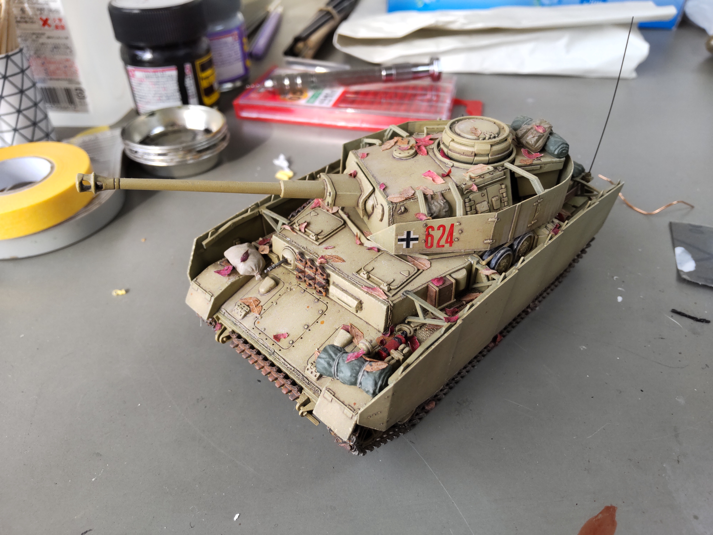
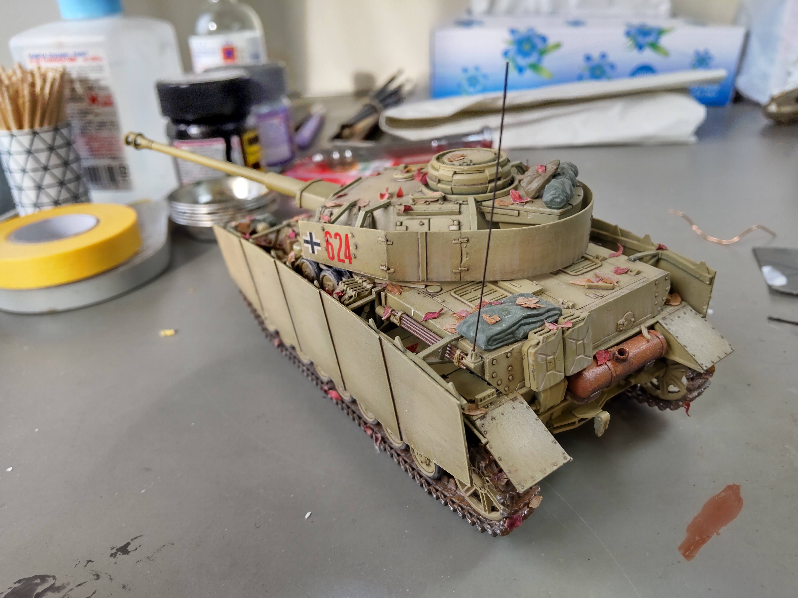
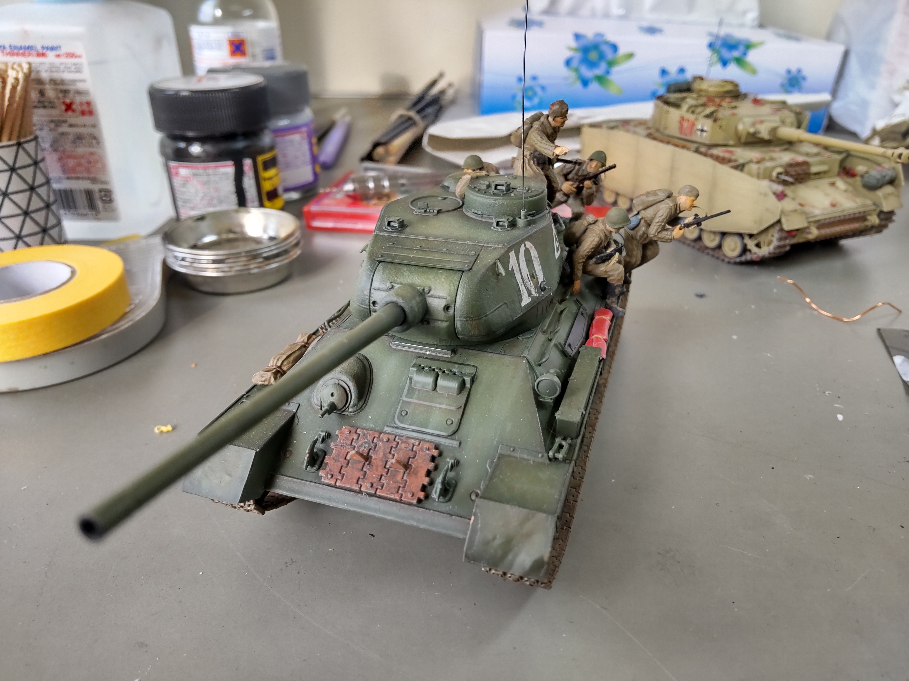
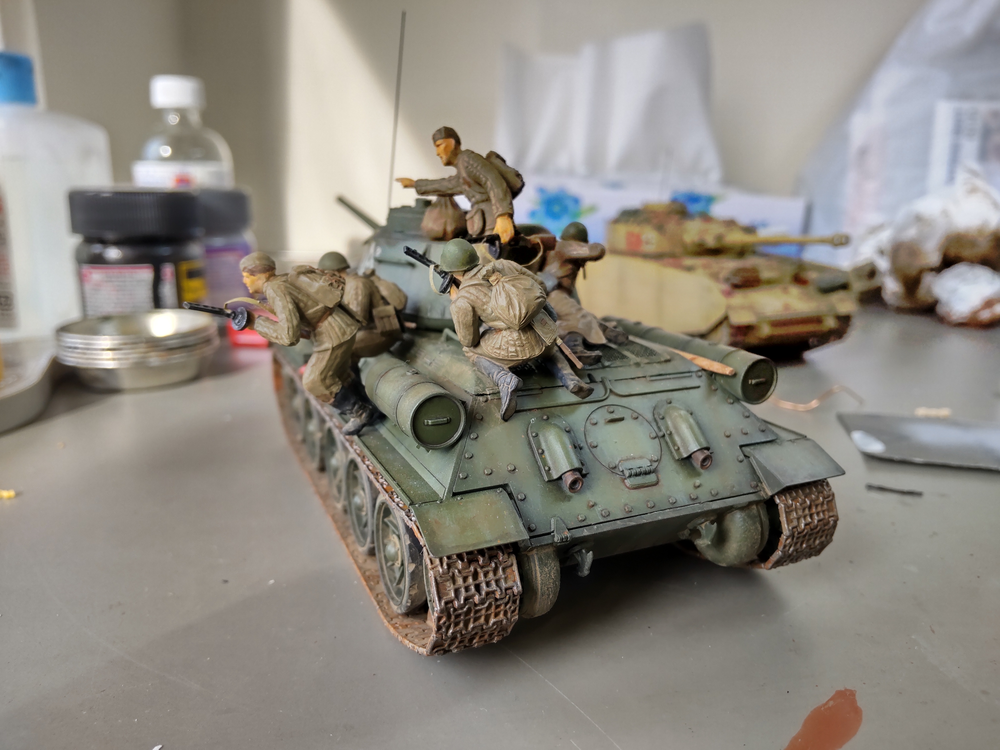

Scale Modeling
I haven't been able to make any scale models for a while since I left all my stuff in Japan, but I thought it might be interesting to share. I used to make miniature tanks, planes, ships, etc back in highschool because I really liked to build these highly detailed but small models (for reference these fit on my right hand). I find scale modeling and software engineering really similar, in that ultimately the ability to be creative and think outside the box, is what defines our skills and abilities.



